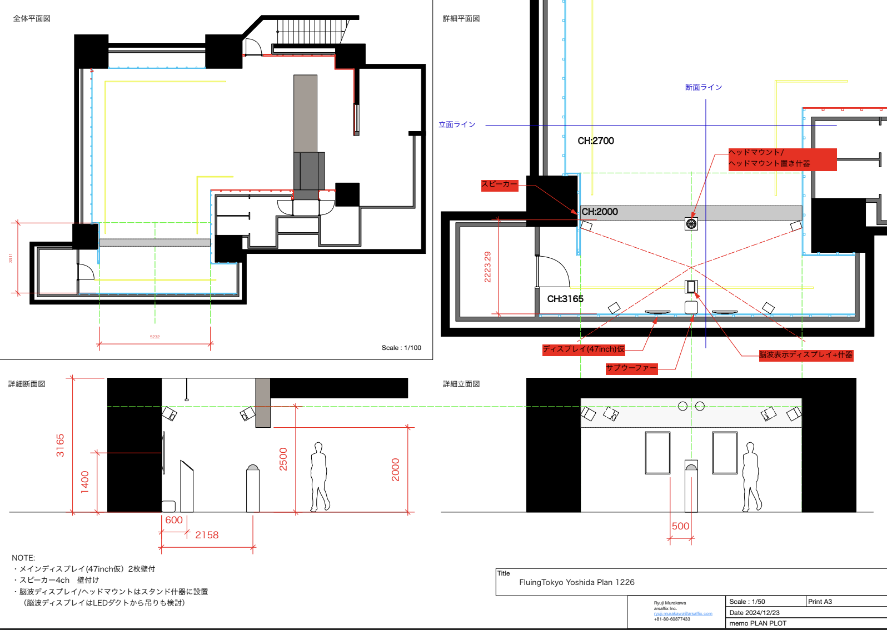

liberated frequencies installation at Flying Tokyo the final presentation

| Concept Our installation, liberated frequencies, explores unprecedented soundscapes that defy our traditional auditory pleasures by "liberating" AI from the limitations of human-defined ‘pleasing'. Before the production, our team conducted field recordings to capture natural sounds, which a subject later rated based on the pleasure they evoked. During the installation, the AI continuously learns in real-time from the highest-rated nature sounds, such as the soothing flow of river streams. Utilizing this sound data, the AI predicts and generates the subsequent auditory experiences, creating an evolving and immersive soundscape. The subject in the soundscape wears EEG sensors that measure real-time theta waves (4-8 Hz) of her brain activity. According to Sammler et al. (2007), increased activity in this frequency band is typically associated with intensified auditory pleasure. However, in response to this heightened brain-based pleasure, the AI—continuously learning from the real-time EEG data—intentionally disrupts the experience. It transforms the generated sounds, subtly altering pitches and waveforms, gradually diverging from the original sound patterns the subject found pleasurable. This deliberate shift invites the viewer to explore the boundaries of discomfort, challenging the conventional auditory aesthetics inherently favored by human perception. Do these deliberately 'liberated' sounds merely traumatize the human senses, or do they open a gateway to new auditory expressions and possibilities? Artist: Keigo Yoshida, Rinko Oka Technical Direction: Ryuji Murakawa (Arsaffix) Supported by Flying Tokyo 2024 Special thanks to Daito Manabe and Shinya Fujii for their invaluable guidance. |
